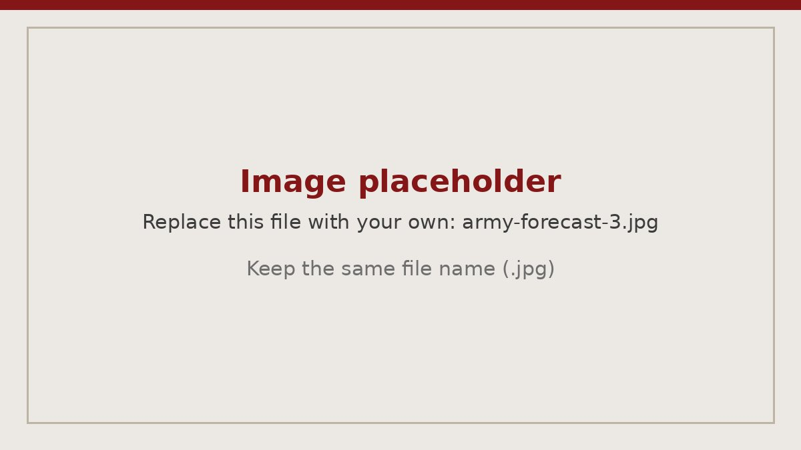

Operations · Army logistics
Army Unit Commodities Forecast
A planning model that forecasts class items to support readiness decisions.
- Setting
- Battalion logistics, Fort Carson
- Role
- Battalion Logistics Officer
- Scope
- $15M annual commodity budget, 500+ Soldiers
- Format
- Spreadsheet planning model

The problem
As Battalion Logistics Officer at Fort Carson, I controlled a $15 million annual commodity budget covering fuel, food, water, and repair parts for more than 500 Soldiers. Those items have to be on hand when training and operations need them. Ordering too little or too late carries an immediate readiness cost, while ordering too much ties up money the unit needs elsewhere.
The model
I built a planning model around days of supply. It compared the supplies on hand against the number of Soldiers and vehicles to support, using consumption rates for food, fuel, water, ammunition, and construction supplies to show when to order new supplies and when to issue them down to subordinate units.
The model also showed how many fully packed days of supply each subordinate unit had on hand at that moment and rated each unit on a Green, Amber, Red, or Black scale. That gave the battalion commander a quick visual read on unit readiness, with the assumptions behind each number visible so they could be questioned and refined.

How it fit the larger effort
The forecast sat alongside other systems I introduced: kanban boards for visual management, automated supply reporting, and regular audits to find bottlenecks. The same disciplined approach to tracking and planning supported the unit's 2023 modernization effort, in which it became the first in its Brigade to reach 100% fielding of new equipment.
What I took away
A forecast earns trust when people can see how it works. I learned to build simple tools that busy leaders will actually use, and to treat accuracy and transparency as equally important. Both carry directly into consulting work.